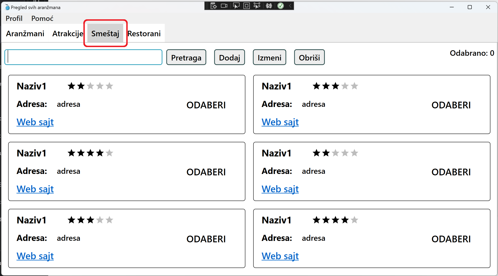
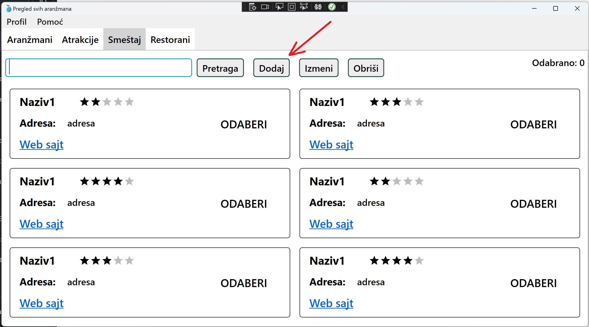
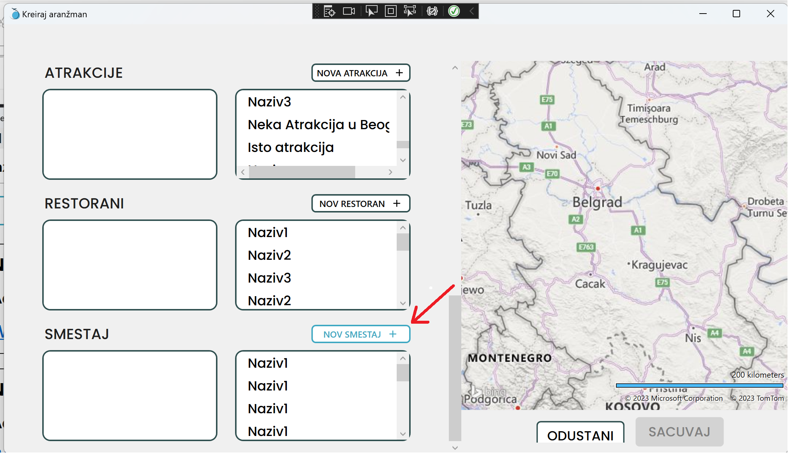
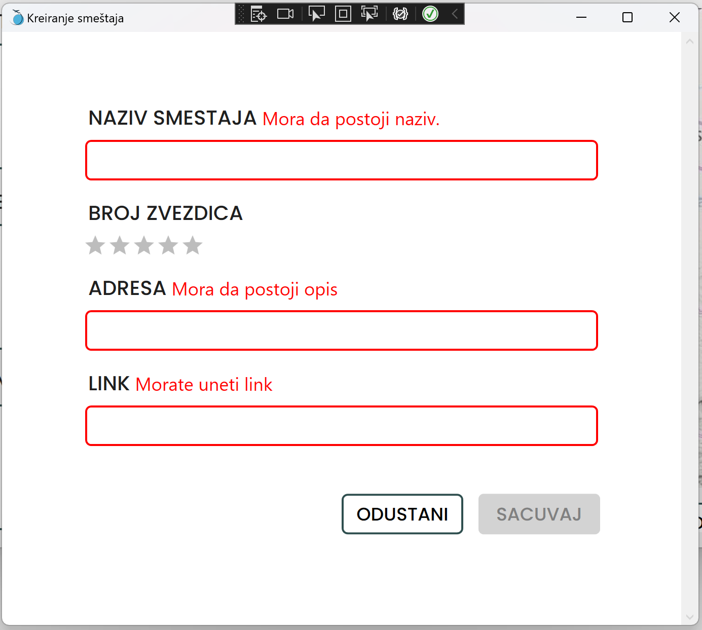
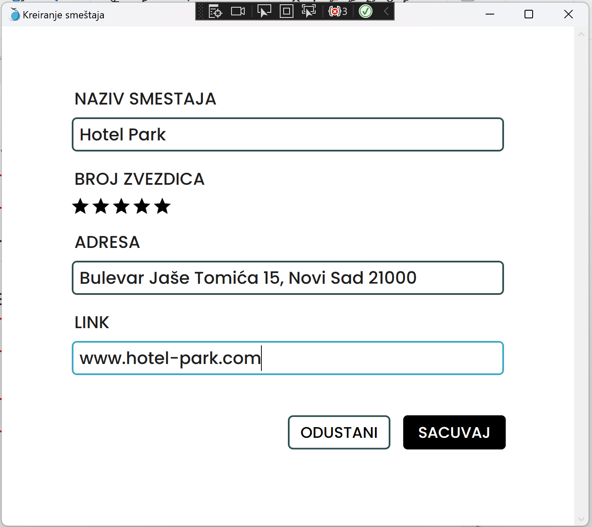
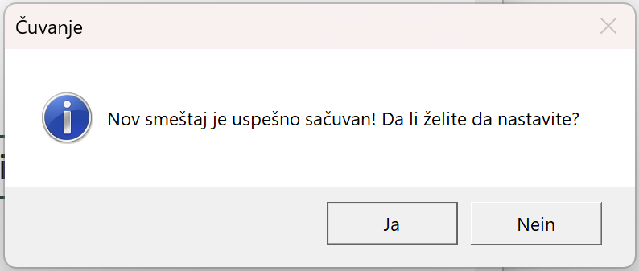
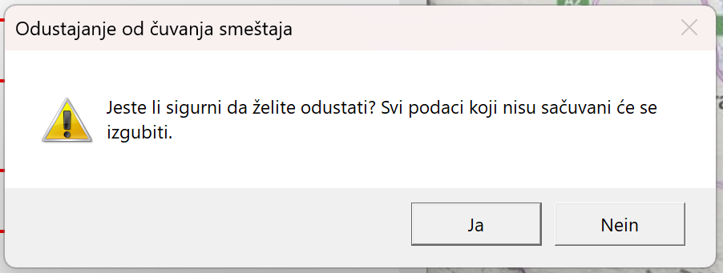

Kako doći do forme za kreiranje novog smestaja?
1. Nakon što ste se prijavili na svoj nalog i otvorio Vam se glavni prozor aplikacije, kliknite mišem na naziv "smestaji", te se uverite da Vam se otvorio prikaz svih smestaja, kao ne sledećoj slici.

2. Sledeće kliknite mišem na dugme "Dodaj", kako biste otvorili novi prozor sa formom za Vaš smestaj.
Res
Alternativno, ako se nalazite u situaciji da tokom kreiranja novog aranžmana primetite da Vam smestaj koji želite da dodate još ne postoji u sistemu i želite nabrzaka da ga dodate, kliknite na dugme "NOV SMESŠTAJ", koji se nalazi iznad liste svih smestaja u Vašoj formi.

3. Kada Vam se otvori forma za kreiranje novog smestaja, primetićete da imate crvena polja, to je naznaka da su ona neispravna te da ne možete sačuvati novi smestaj dok ta polja ne popunite.

4. Klikom na bilo koje polje, moćićete da počnete da unosite podatke.
(Za brži rad, možete se kretati kroz polja za unos klikom na "tab" dugme na Vašoj tastaturi)
Nakon što unesete željenu vrednost, prestaće polje da se crveni, što naznačava da je polje sada ispravno i možete da nastavite dalje sa unosom podataka.

Kako biste izabrali broj zvezdica smestaja, kliknite mišem na zvezdicu pod rednim brojem koji Vam je potreban. Kada odgovarajući broj zvezdica primii crnu boju, znate da su izabrane ispravno.
U polje za link je potrebno uneti URL, tj. adresu Veb stranice smestaja/hotela. Link mora početi sa 'https', 'http' ili 'www', kako bi se u prikazu ispravno otvorio.
5. Nakon što ste uneli sve potrebne podatke, primetićete da Vam je dugme za čuvanje promenilo boju, naznačavajući da sada možete da sačuvate Vaš smestaj klikom na to dugme.
(Za brži rad, možete i jednostavno da pritisnete ENTER na Vašoj tastaturi)
6. Nakon što ste se odlučili da sačuvate smestaj, kako biste se uverili da je sve bilo ispravno, pojaviće Vam se prozor za potvrdu. Ako želite da odma za redom kreirate još jedan smestaj u Vašem sistemu, kkliknite na DA. U suprotnom kliknite na NE kako biste se vratili na početni prozor aplikacije.

7. Ako se ipak predomislite iz bilo kog razloga i ne želite da napravite novi smestaj, možete klikom na dugme ODUSTANI da prekinete. Otvoriće Vam se prozor za potvrdu akcije. U slučaju da ste slučajno pošli da odustanete, možete prekinuti akciju.
(Za brži rad, možete i na tastaturu pritisnuti kombinaciju CTRL+X)
